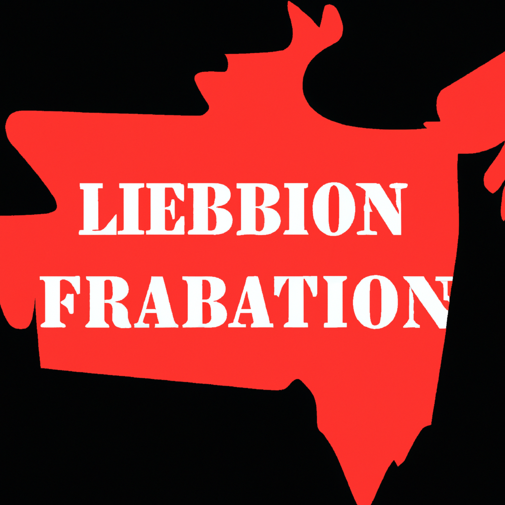

Liberation war of Bangladesh
The Liberation War of Bangladesh, also known as the Bangladesh War of Independence, was a significant event in the history of the country. It was a nine-month-long conflict that took place in 1971, between the East Pakistanis and the West Pakistanis, resulting in the independence of Bangladesh from Pakistan.
The roots of the Liberation War can be traced back to the partition of India in 1947, which divided the country into two separate nations – India and Pakistan. East Pakistan, which later became Bangladesh, was geographically separated from West Pakistan by India and suffered from economic and political discrimination at the hands of the West Pakistani government.
The tensions between East and West Pakistan escalated in 1970 when the Awami League, led by Sheikh Mujibur Rahman, won a landslide victory in the general elections of Pakistan. However, the ruling government of West Pakistan, led by General Yahya Khan, refused to transfer power to the Awami League, leading to widespread protests and civil unrest in East Pakistan.
On March 26, 1971, the Pakistani military launched a brutal crackdown on the people of East Pakistan, killing thousands of innocent civilians and sparking the beginning of the Liberation War. In response, the Bengali people, led by the Mukti Bahini (Freedom Fighters), fought back against the Pakistani forces, eventually gaining the support of India.
The Indian Army officially entered the war on December 3, 1971, and within two weeks, the Pakistani forces surrendered, leading to the independence of Bangladesh on December 16, 1971. The Liberation War of Bangladesh had a high cost, with an estimated three million people killed and thousands more injured or displaced.
The war had a profound impact on the people of Bangladesh, as it not only secured their independence but also instilled a sense of national pride and unity. The heroes of the Liberation War, including Sheikh Mujibur Rahman, are revered as national symbols of courage and sacrifice.
Today, the Liberation War of Bangladesh is commemorated annually on December 16 as Victory Day, a national holiday that celebrates the country's independence. The sacrifices made by the freedom fighters are remembered and honored, and their legacy continues to inspire generations of Bangladeshis to strive for a better, more prosperous future.
In conclusion, the Liberation War of Bangladesh was a pivotal moment in the history of the country, marking the end of years of oppression and injustice and the beginning of a new era of freedom and self-determination. It serves as a reminder of the power of unity, resilience, and determination in the face of adversity, and continues to be a source of pride and inspiration for the people of Bangladesh.